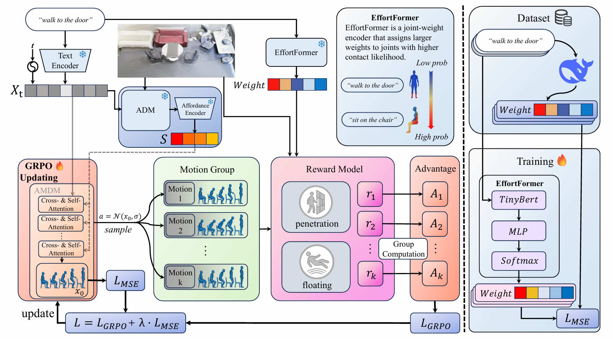

Effort: Physically Plausible and Scene-aware Human Motion Generation with GRPO Reinforcement Learning
Anonymous Institution
Abstract
Generating human motion from textual descriptions has advanced rapidly in recent years. However, synthesizing motions that are both scene-aware and physically plausible remains challenging in complex 3D environments. Existing physics-aware solutions often rely on simulator-in-the-loop refinement, which can be computationally expensive and difficult to scale. Moreover, when motion generation is further conditioned on 3D scenes, enforcing contact and collision constraints becomes substantially harder, making artifacts such as penetration and floating more pronounced. To address these issues, we introduce Effort, a novel GRPO-based reinforcement learning framework for physically consistent, scene-aware human motion generation. Effort aligns a pretrained scene-conditioned motion diffusion model with physical feasibility by optimizing a set of physics-consistency rewards that explicitly quantify Human–Scene Interaction (HSI) quality. This alignment is designed to encourage the model to increase the likelihood of physically feasible motions while preserving semantic alignment to the input text and scene. By leveraging group-relative optimization, Effort enables stable and efficient training without value function learning or hard physical constraints. Experiments on HUMANISE and Novel demonstrate significant improvement on physical plausibility while maintaining consistently strong motion quality and text–motion alignment.
Method Overview

Overview of our method. The left part illustrates our group-relative physics alignment reinforcement learning framework. The right part shows the construction and training process of the EffortFormer module.
Video Results
walk to the door - Afford
walk to the door - Effort (Ours)
lie down on the bed - Afford
lie down on the bed - Effort (Ours)